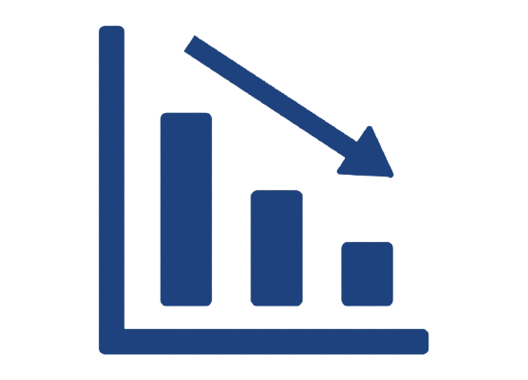

Key Features

This software was developed to perform a set of tasks that have been minimised by human input. It was a US based automation project where we have to reduce risks of errors and smooth workflows.
Everyday there’s countless hacking attempts, through which automation opens the door to vulnerability. Being aware of these risks and understanding that everyone is vulnerable, being proactive is the best solution. We gave our best to remove this issue permanently.
The major challenge faced in automation is accessing fast data. Accessing data faster was a little stressful, but our professionals took responsibility of removing each and every issue coming on our way.
Reducing manual effort through automation increases productivity and saves time and money. Our professional worked hard to solve this issue so that end user can have high efficiency and smooth work.
Humans naturally become prone to errors, which could lead to delays and operational inefficiency, but automation is here to change the way of working. This automated software helped us to work smoothly with higher efficiency and saved our lots of time and efforts. To build a successful software our professionals removed each and every issue permanently.
This software was developed for saving time, man effort, monitoring data, and saving high salaries and helped them by doing all the operational and repetitive task automatically and reduced their burden.